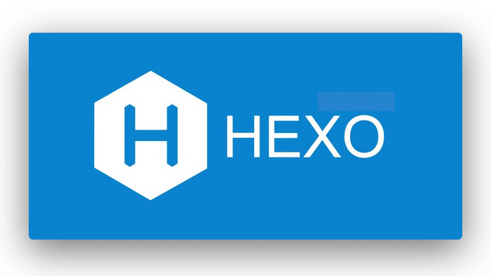

文章
17
标签
9
分类
8
主页
博文
分类
标签
归档
热力图
编辑器
生活
说说
相册
音乐
书单
常用
友链
留言板
关于笔者
SereniusX的博客
搜索
主页
博文
分类
标签
归档
热力图
编辑器
生活
说说
相册
音乐
书单
常用
友链
留言板
关于笔者
SereniusX的博客
友情链接
与我互链的优质资源
0
个链接
0
个分类
全部
官方文档
好朋友们
点头之交
官方文档

Hexo 文档
静态博客框架官方文档
博客框架
访问
↗
Butterfly 主题
Hexo 主题文档
主题美化
访问
↗
好朋友们
Aurora
资深开发者的技术博客
技术分享
访问
↗
TDK
打 ACM 的喵
技术分享
访问
↗
点头之交
设计笔记
UI 设计师的日常记录
设计
访问
↗
申请友链
欢迎在留言板提交友链申请。为便于互链，请确保你的网站已添加本站链接：
我的站点信息
名称：
SereniusX 的博客
网址：
https://sereniusx.github.io
描述：
记录技术学习与生活点滴
复制站点信息
评论
SereniusX
文章
17
标签
9
分类
8
Follow Me
归档
二月 2026
1
一月 2026
11
十月 2025
5
网站信息
文章数目 :
17
运行时间 :
本站访客数 :
本站总浏览量 :
最后更新时间 :
搜索
数据加载中